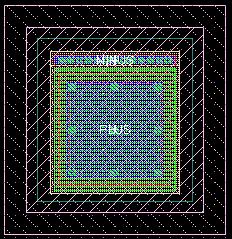
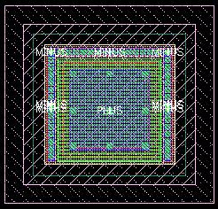
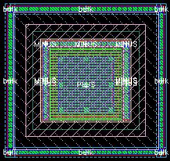

c3t_mis bottom contacts property
these layouts show the effect of varying the bottom contacts property for an example c3t_mis cap
bulk = n (this is the default)

bottom contacts = lrt

bottom contacts = lrt and bulk = lbrt
